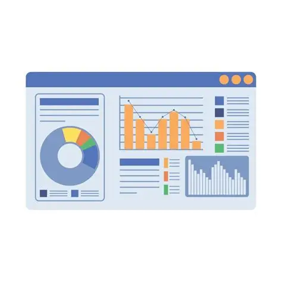
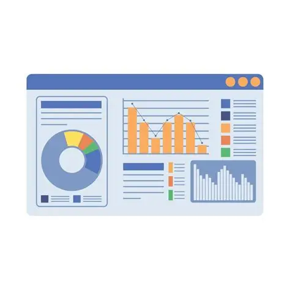
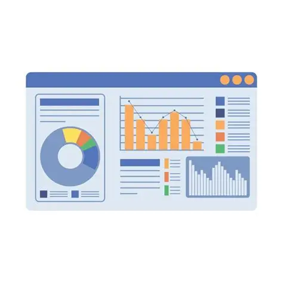
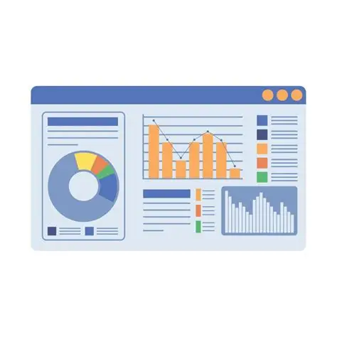
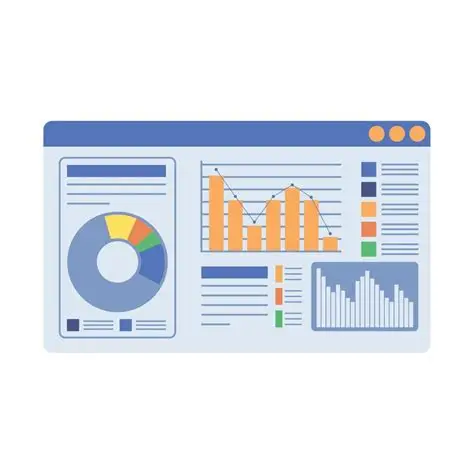

Historial de Conversiones
Inicio
Tasas
Historial
Currency API
Ahrefs
📊 Historial de Conversiones
Todas tus conversiones guardadas
← Volver al Conversor
🗑️ Limpiar Historial
Cargando historial...

 


